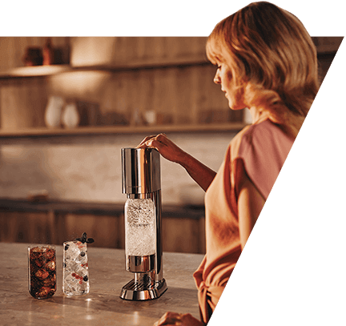
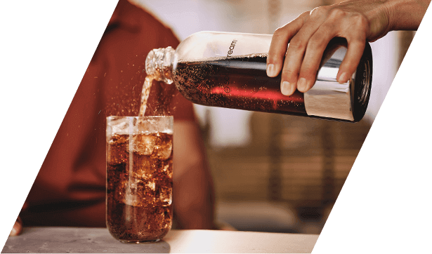
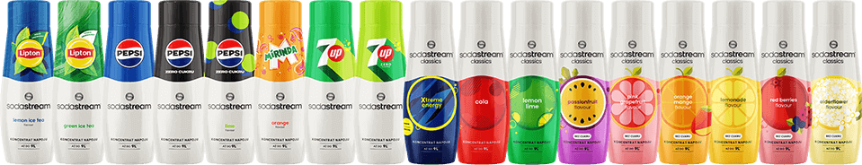

Harmonia formy
i funkcjonalności
SodaStream Ensō to nie tylko saturator, ale i dzieło sztuki użytkowej. Subtelny design, inspirowany japońskim minimalizmem, idzie w parze z najwyższą funkcjonalnością.

Stworzony
z myślą o estetyce
i praktyczności

Elegancja saturatora Ensō sprawia, że jest nie tylko funkcjonalnym urządzeniem,
lecz także będzie
stanowić
centralny
punkt Twojej kuchni.
Dbałość o detale – premium design
Każdy element saturatora SodaStream Ensō został zaprojektowany z myślą o użytkowniku, który ceni zarówno jakość, prestiż, jak również nowoczesne rozwiązania, ułatwiające codzienność.
Intuicyjne rozwiązania:
Snap & Lock –
Prosty Montaż na "Klik"
Jednym ruchem
zamontujesz lub
wyjmiesz butelkę.
Quick Connect – Błyskawiczna Instalacja Cylindra CO₂
Wystarczy wsunąć cylinder, bez konieczności wkręcania.
Stal Nierdzewna – Trwałość na Lata
Odporność na
uszkodzenia i łatwość czyszczenia to gwarancja długowieczności.
Perfekcyjna równowaga
Ensō łączy piękno z funkcjonalnością, zapewniając niezawodność
i wygodę na co dzień.
Stylowa i funkcjonalna butelka z Tritanu
W zestawie SodaStream Ensō znajdziesz dopracowaną w każdym calu butelkę,
która idealnie łączy się z designem urządzenia.
Trwałość i bezpieczeństwo
Wykonana z Tritanu butelka jest odporna na matowienie, zarysowania i wysokie temperatury, co czyni ją
idealnym wyborem
do codziennego użytku. Tritan jest bezpiecznym dla zdrowia materiałem, wolnym od BPA.
-
Higiena na najwyższym poziomie
Butelkę można myć w zmywarce,
co ułatwia utrzymanie jej w czystości. Odłączana podstawa pozwala na dokładne umycie każdej części, zapewniając wysoki poziom higieny.
Wyjątkowy design Jej elegancki wygląd, wzbogacony połyskującymi detalami ze stali nierdzewnej, czyni ją nie tylko praktycznym akcesorium, ale również stylowym elementem każdej kuchni. Pojemność 1 litra sprawia, że butelka idealnie nadaje się do użytku domowego a także świetnie sprawdzi się w trakcie spacerów czy w pracy.
Ekologia w codziennym wydaniu
Dzięki SodaStream Ensō możesz zadbać o środowisko bez rezygnacji z wygody.
Mniej plastiku, więcej korzyści
Z SodaStream gazowanie wody w domu jest prostsze niż kiedykolwiek! Wielorazowe butelki pozwalają zastąpić
setki
jednorazowych butelek plastikowych, a Ty możesz cieszyć się świeżo gazowaną wodą bez wychodzenia z domu.
Proekologiczne rozwiązania na co dzień
Wybierając Ensō, łączysz świadome wybory z codzienną wygodą, dbając o planetę w łatwy
i przystępny sposób.
Gazuj, miksuj, smakuj
Z SodaStream Ensō proces tworzenia napojów jest prosty i szybki, a dzięki możliwości dostosowania napoju do Twoich preferencji efekt zachwyci Cię za każdym razem.
Jak to działa?
gazuj
Napełnij butelkę wodą i dodaj bąbelki – stopień nagazowania zależy od Ciebie.
miksuj
Dodaj ulubione składniki, takie jak owoce, syropy czy zioła.
smakuj
Napój gotowy – teraz czas na chwilę przyjemności
Napełnij butelkę wodą i dodaj bąbelki – stopień nagazowania zależy od Ciebie.

Dodaj ulubione
składniki, takie jak
owoce, syropy czy
zioła.

Napój gotowy – teraz czas na chwilę przyjemności
Ensō to kreatywność i wygoda w jednym – zaskocz siebie i swoich bliskich wyjątkowymi kompozycjami.
Perfekcyjne
koktajle i moktajle
na 1, 2, tssst!
Odkryj linię SodaStream Crafted – bezalkoholowych baz do koktajli i moktajli, które przeniosą Twoje napoje na wyższy poziom. W ciągu dnia stworzysz z nich smakowite miksy o nietuzinkowych smakach, a wieczorem zachwycisz gości i domowników wyjątkowymi drinkami.
Spróbuj naszych hitów:
Ananas & Jalapeño:
Unikalne połączenie smaków tropikalnego ananasa i ognistego jalapeño, które rozpali wszystkie zmysły
Grejpfrut & Czarny Bez:
Wyrafinowana kompozycja smaków soczystego grejpfruta i romantycznych kwiatów czarnego bzu oczaruje Twoich gości
Brzoskwinia & Imbir:
Owocny mariaż smaków słodkiej brzoskwini z pikantnym imbirem zachwyca balansem i przyjemnie orzeźwia
Dodaj odrobinę kreatywności do każdego dnia z SodaStream Crafted!
Jedna SodaStream – wiele możliwości
Wypróbuj bogatą ofertę syropów SodaStream i ciesz się wolnością wyboru oraz możliwością personalizowania napojów gazowanych.
Odkryj świat syropów SodaStream!
Wybierz swoje ulubione smaki – orzeźwiającą Colę, Pepsi, Mirindę, Lemoniadę lub egzotyczną Marakuję. Twórz wyjątkowe kompozycje smakowe, eksperymentuj z dodatkami i ciesz się pełną swobodą w przygotowywaniu zarówno ulubionych, jak i całkiem nowych napojów.